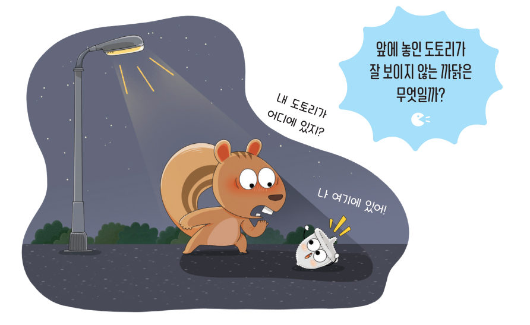

살아있는 교과서 · Ⅶ. 태양계 · 2. 지구와 달 · 03 246~248쪽 · 대단원 마무리
가려지는
가려지는
태양과 달
“내 도토리가 어디에 있지?” “나 여기에 있어!” 앞에 놓인 도토리가 잘 보이지 않는 까닭은 무엇일까? 태양, 지구, 달을 한 줄로 세워 보며 일식과 월식이 일어나는 원리를 알아보자.
🎯 이 단원을 배우면 — 일식과 월식의 원리를 설명할 수 있다.
해 보기태양과 달이 가려지는 원리 알아보기 246쪽
태양과 달이 가려지는 현상은 어떻게 나타날까?
준비물 전등, 스타이로폼 공, 스마트 기기
- 태양과 달이 가려지는 현상을 조사하여 관찰한다. (검색어: 일식, 월식)
- 지구에서 보았을 때 태양과 달이 가려지는 현상이 나타나려면 태양, 지구, 달이 어떻게 배열되어야 할지 이야기해 보자.
- 스마트 기기로 동영상을 촬영하면서 전등과 스타이로폼 공의 위치를 조정하여 과정 2에서 이야기한 내용을 구현해 보자.
⚠️ 전등을 깨뜨려 다치지 않도록, 켜진 전등에 화상을 입지 않도록 주의한다.

?스마트 기기를 지구라고 할 때, 전등은 , 스타이로폼 공은 을 뜻한다.
가상 실험일식·월식 시뮬레이터
달의 위치를 바꿔 보자(달은 지구 주위를 서→동, 시계 반대 방향으로 돌아요). 달의 그림자(검은 원뿔)가 지구에 닿거나, 달이 지구의 그림자에 들어가면 무슨 일이 일어날까? 오른쪽 작은 화면에서 지구의 관측자가 본 하늘을 확인하자. (크기와 거리는 실제 비율과 달라요.)
-
1태양이 가려지는 현상(일식)은 달이 의 위치에 있을 때, 달이 가려지는 현상(월식)은 달이 의 위치에 있을 때 일어난다.
2태양과 달이 가려지는 현상이 일어날 때 천체의 배열은 각각 어떻게 되는지 이야기해 보자.
교과서일식과 월식 247쪽
태양과 달이 가려지는 현상은 그림 7-9와 같이 나타난다. 지구에서 보았을 때 달이 태양을 가리는 현상을 일식이라고 한다. 일식은 달이 삭의 위치에 와서 태양, 달, 지구가 순서대로 일직선상에 있을 때 일어난다. 이때 달이 태양을 완전히 가리면 개기일식이라고 하고, 일부를 가리면 부분일식이라고 한다. 일식은 지구에서 달의 그림자가 생기는 지역에서만 볼 수 있다.
한편 지구에서 보았을 때 달이 지구의 그림자에 들어가 가려지는 현상을 월식이라고 한다. 월식은 달이 망의 위치에 와서 태양, 지구, 달이 순서대로 일직선상에 있을 때 일어난다. 이때 달이 지구의 그림자에 완전히 가려져 붉게 보이면 ●개기월식이라고 하고, 일부가 가려지면 부분월식이라고 한다. 월식은 지구에서 밤인 지역 어디에서나 볼 수 있다.

●개기월식이 일어날 때 달의 색깔 개기월식이 일어날 때 달이 붉게 보이는 까닭은 빛이 대기를 지날 때 흩어지면서 달에 붉은 빛이 상대적으로 많이 도달하기 때문이다.
💡 더 생각하기 삭과 망은 매달 돌아오는데 일식과 월식은 매달 일어나지 않아요. 달이 도는 길(공전 궤도면)이 지구가 도는 길에 대해 약 5° 기울어져 있어서, 대부분의 삭과 망 때에는 태양-지구-달이 정확히 일직선이 되지 않기 때문이에요.
스스로 확인하기246쪽 학습 목표를 달성했는지 확인해 보자 247쪽
1개념 확인 지구에서 보았을 때 지구의 그림자에 달이 가려지는 현상을 ( )(이)라고 한다.
2사고력 일식보다 월식을 관측할 수 있는 지역이 넓은 까닭을 설명해 보자.
🧩 두 번째 블록 · 힌트 조각 2 (247쪽)
일식은 태양, ( ), 지구가 순서대로 일직선상에 있을 때 볼 수 있다.
5분 테스트가려지는 태양과 달
1지구에서 보았을 때 달이 태양의 일부 또는 전체를 가리는 현상을 이라 하고, 천체가 태양 - - 순으로 일직선상에 있을 때 나타난다.
달이 지구의 그림자 속으로 들어가 달의 일부 또는 전체가 가려지는 현상을 이라 하고, 천체가 태양 - - 순으로 일직선상에 있을 때 나타난다.
지구의 그림자에 달의 일부가 가려지는 현상을 ( )이라고 한다.
달이 지구의 그림자 속으로 들어가 달의 일부 또는 전체가 가려지는 현상을 이라 하고, 천체가 태양 - - 순으로 일직선상에 있을 때 나타난다.
지구의 그림자에 달의 일부가 가려지는 현상을 ( )이라고 한다.
2다음은 달이 태양을 가리는 현상이다. 각각의 이름을 쓰시오.
(1) (2)
3그림은 일식과 월식이 일어날 때 태양, 달, 지구의 위치를 나타낸 것이다.
개기일식이 보이는 지구의 위치 · 부분일식이 보이는 위치
개기월식이 일어날 때 달의 위치 · 부분월식이 일어날 때 달의 위치
개기월식이 일어날 때 달의 위치 · 부분월식이 일어날 때 달의 위치
4옳으면 O, 옳지 않으면 X를 골라 보자.
| ⑦ 일식이 일어날 때의 달의 위치는 망이다. | |
| ⑧ 일식은 달의 그림자가 생기는 지역에서만 볼 수 있다. | |
| ⑨ 월식이 일어날 때의 달의 위치는 상현이다. | |
| ⑩ 일식보다 월식을 관측할 수 있는 지역이 넓다. |
스스로 정리하기일식과 월식 · 두 번째 블록 정리하기 248쪽
2달의 공전으로 나타나는 현상 — (3) 일식과 월식
· 일식: 지구에서 보았을 때 달이 을/를 가리는 현상
· 월식: 지구에서 보았을 때 달이 지구의 그림자 속으로 들어가 가려지는 현상
· 월식: 지구에서 보았을 때 달이 지구의 그림자 속으로 들어가 가려지는 현상
🧩 두 번째 블록 정리하기 · 조각을 모아 답하기
태양이 가려지는 현상은 왜 일어날까?
조각 1 (244쪽) 달은 지구 주위를 서쪽에서 동쪽으로 공전한다. · 조각 2 (247쪽) 일식은 태양, 달, 지구가 순서대로 일직선상에 있을 때 볼 수 있다.
대단원 마무리천문대에서 천체 관측하기
천문대나 과학 교육원에서는 천체 관측실에서 천체를 관측할 수 있도록 다양한 행사를 진행한다. 주변에 있는 천문대나 과학 교육원을 찾아 천체 망원경으로 태양계를 구성하는 천체를 관측해 보자.
💭함께 발견하기 학교에서 천체를 관측할 때 아쉬웠던 점을 이야기해 보자.
1협력적 소통 천체를 관측할 수 있는 천문대나 과학 교육원을 찾고, 방문하기 전에 미리 알아야 할 점을 조사해 보자.
2~3천체 관측 보고서 — 관측 날짜·장소, 관측한 천체, 관측한 모습(맨눈/망원경), 새로 알게 된 점
스스로 평가Ⅶ. 태양계 돌아보기 · 선생님께 한마디
| 평가 기준 | 스스로 평가 |
|---|---|
| 지식·이해 지구와 달의 운동으로 나타나는 현상을 설명할 수 있는가? | |
| 과정·기능 지구와 달의 운동으로 나타나는 현상을 설명하기 위해 모형을 이용할 수 있는가? | |
| 가치·태도 지구와 달의 운동으로 나타나는 현상과 관련된 활동에 적극적으로 참여했는가? | |
| 천체 망원경 사용법을 알고, 유의 사항을 숙지하여 천체를 관측하였는가? | |
| 천체를 관측하며 밤하늘에 대한 호기심이 생겼고, 모둠 구성원의 의견을 존중했는가? |
💬활동을 수행하면서 알게 된 점, 어려웠던 점, 더 알아보고 싶은 점, 선생님께 하고 싶은 말을 써 주세요.
제출학생 정보 · 제출하기
모든 활동을 마친 뒤 제출하면 전체가 한 번에 채점되고 피드백이 나타나요. 답안은 선생님 스프레드시트(중1 탭)에 기록돼요.